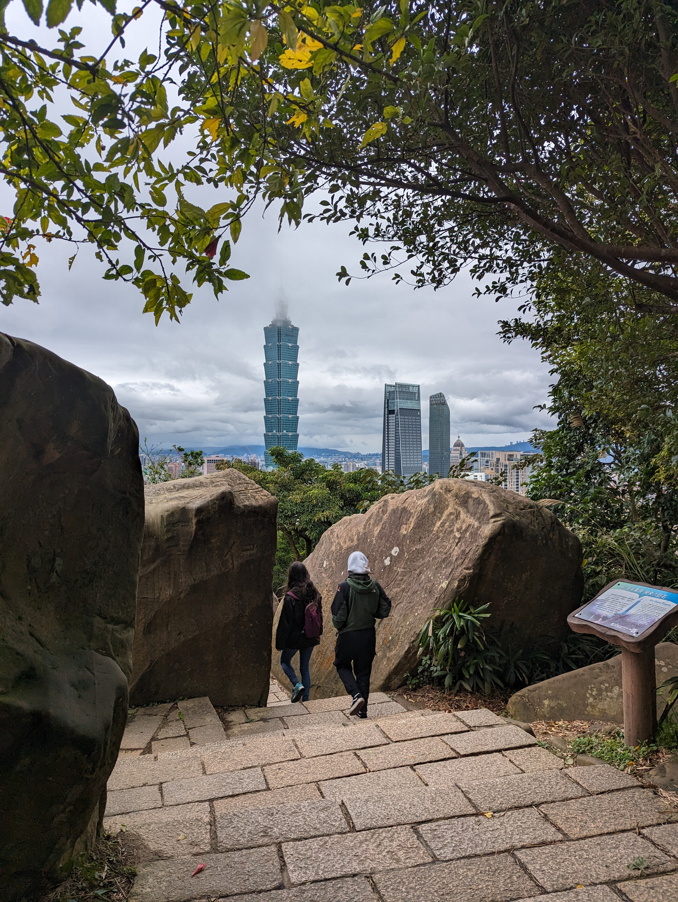
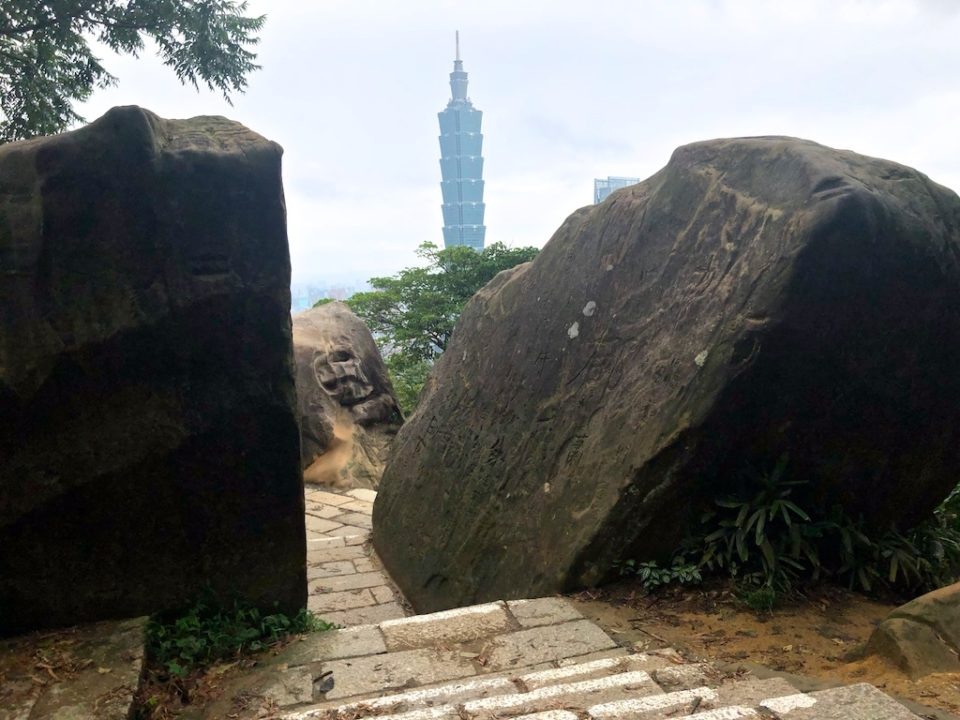
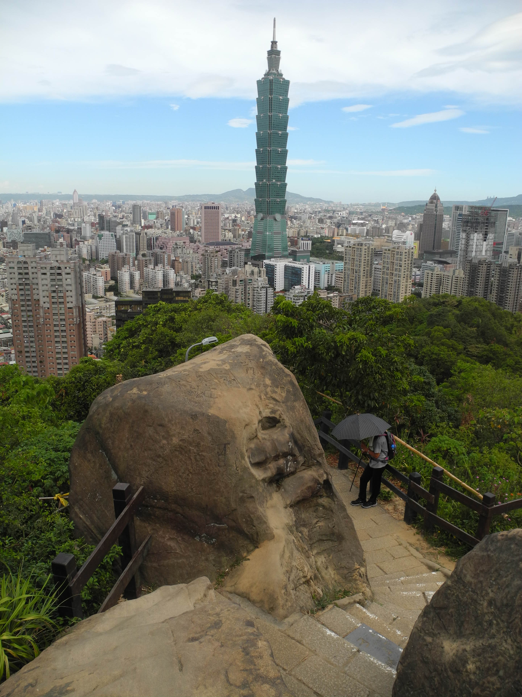

模型將山與城市壓縮在同一塊基座。下面列出可見差異與尚未確認的部分，供你逐項檢查。

| 項目 | 模型差異／待確認 |
|---|---|
| 左側巨石 | 直立輪廓保留，但石面較整齊；裂隙、苔蘚與風化細節未逐處對應。 |
| 右側巨石 | 保留斜頂，但模型較矮、較圓，實景石壁更高。 |
| 階梯 | 已朝城市方向下坡；階數、寬度、轉折與接縫仍經簡化。 |
| 完整六巨石排列 | 參考照片不足以確認完整六石位置，其他小岩體仍屬推演。 |
| 岩石旁樹木 | 兩側大樹保留，但實景有上方覆蓋的枝葉；模型樹冠、位置與高度經 Q 版化。 |
| 101／南山廣場 | 101 在左、南山在右的關係保留；南山冠部與立面仍簡化，需要竣工近照核對。 |
| 城市街廓 | 一般建築、道路、路口與廣場是生成推演，沒有對應實際街廓；都市樹木也未逐株核對。 |
| 山與城市距離 | 距離大幅壓縮；實景的森林遮擋更明顯。基座是展示設計。 |


來源：Wikimedia Commons · UponArriving · 臺北市大地工程處。照片未改動；此對照不是測繪驗收。